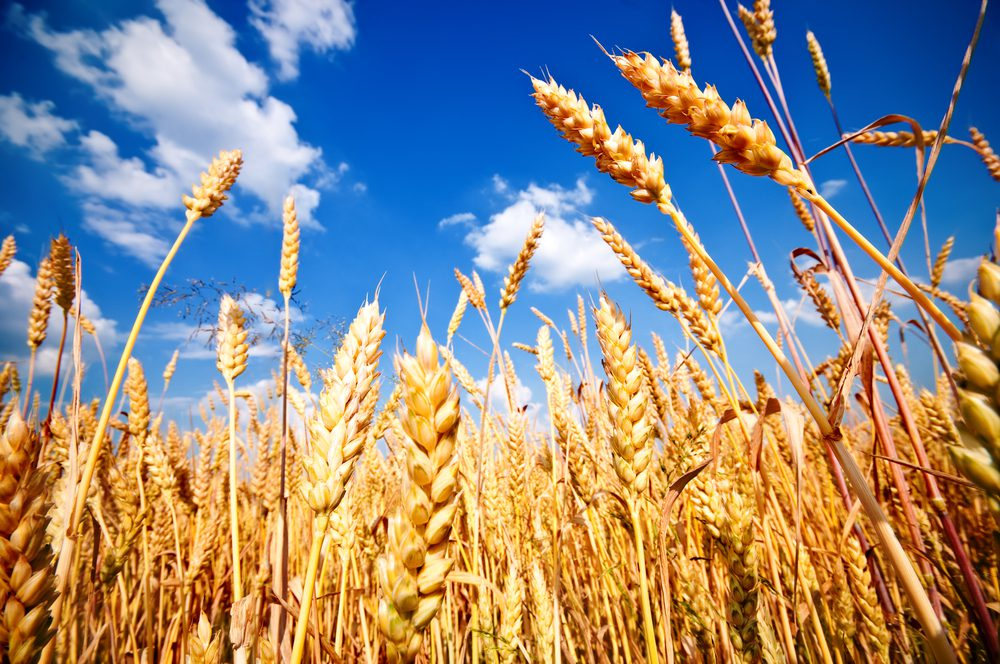

Wheat
Best Wheat Planting Practices: Wheat prefers well-drained soils with good water-holding capacity. Loamy or sandy loam soils with a pH range of 6 to 7.5 are most suitable for wheat cultivation. Soil fertility is crucial, so organic matter should be incorporated into the soil before planting.Determine the planting time based on the region’s climate and the recommended planting window. Prepare the seedbed by plowing or tilling the soil to a suitable depth, ensuring good seed-to-soil contact. Plant the seeds at the appropriate depth, typically 2 to 5 centimeters, using a seed drill or broadcasting method.
Best Fertilizers for Wheat Farms: Conduct soil tests to determine the nutrient requirements of the wheat crop. Apply fertilizers, particularly nitrogen, phosphorus, and potassium, in accordance with the crop’s specific needs. Split the nitrogen application to provide adequate nutrition throughout the growth stages.
Pest management for Wheat: pests such as rust, powdery mildew, aphids, and Hessian flies. Practice crop rotation, use disease-resistant wheat varieties, and implement integrated pest management strategies. Fungicides and insecticides can be applied when necessary, following recommended guidelines and safety precautions.
Storage techniques for Wheat: Harvest the wheat crop when the grains are fully mature and the moisture content has reduced to the recommended level. Use appropriate harvesting equipment such as combine harvesters to ensure efficient and clean harvesting. Properly store the harvested wheat in well-ventilated facilities, protecting it from moisture, pests, and temperature fluctuations.